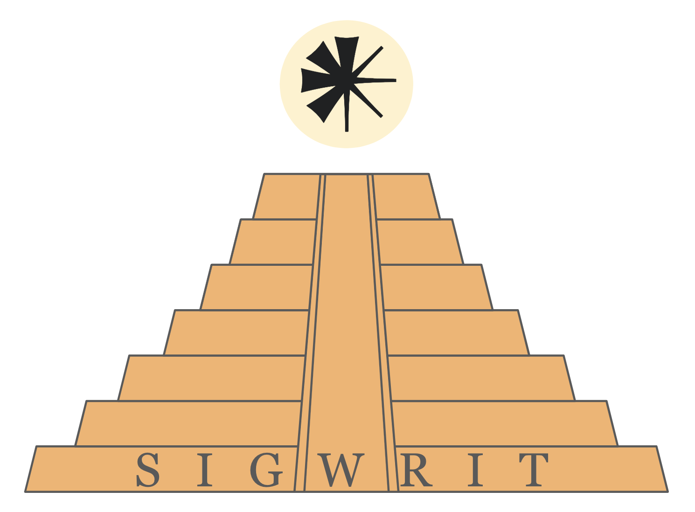

|  |
ACL Special Interest Group on writing systems and written language (SIGWrit) The purpose of SIGWrit is to promote the better understanding of the
relationship between language in its spoken or signed form, and
language in its written form, as well as to promote research on
computation and written language. |